자동차정비산업기사 (2016-08-21 기출문제)
1과목: 일반기계공학
1. 원형 단면축이 비틀림 모멘트를 받을 때 생기는 최대전단응력에 관한 설명으로 옳지 않은 것은?
- 극단면계수에 비례한다.
- 비틀림 모멘트에 비례한다.
- 극관성 모멘트에 반비례한다.
- 축 지름의 3제곱에 반비례한다.
(정답률: 44%)

2. 유압회로에서 어큐뮬레이터(축압기)의 역할로 거리가 먼 것은?
- 회로 내 충격압력의 흡수
- 펌프 등에서 발생하는 맥동 제거
- 유압을 일정하게 유지
- 유압유의 여과 및 냉각
(정답률: 72%)
3. 다음 중 무단 변속을 만들 수 없는 마찰차는?
- 구면마찰차
- 원추마찰차
- 원통마찰차
- 원판마찰차
(정답률: 61%)
4. 허용 인장응력이 100N/mm2인 아이볼트에 축방향으로 1t의 화물을 들어 올리는 경우, 이 볼트의 골지름은 최소 몇 mm 이상이어야 하는가?
- 9.8
- 11.2
- 13.4
- 16.9
(정답률: 42%)
5. 판재를 굽힘가공 시 탄성의 영향으로 굽힘각의 정밀도가 나지 않는 경우가 있는데 가장 큰 이유는?
- 가공 경화
- 이송 굽힘
- 시효 경화
- 스프링 백
(정답률: 77%)
6. 페놀계 수지로 페놀, 크레졸 등과 포르말린을 반응시켜 제조하는 것이며 전기절연체, 전화기 등에 사용되는 수지로 가장 적합한 것은?
- 베이클라이트
- 멜라민 수지
- 카보런덤
- 실리콘 수지
(정답률: 53%)
7. 선반가공 중에 발생할 수 있는 구성인선을 방지할 수 있는 대책으로 거리가 먼 것은?
- 절삭 깊이를 낮게 한다.
- 경사각을 작게 한다.
- 절삭 공구의 인선을 예리하게 한다.
- 절삭 속도를 크게 한다.
(정답률: 63%)
8. 바닥이 넓은 축열실(蓄熱室) 반사로를 사용하여 선철을 용해, 정련하는 제강법은?
- 평로
- 전기로
- 전로
- 용광로
(정답률: 78%)
9. 그림과 같이 균일분포하중을 받는 단순보에서 최대 굽힘 응력은?
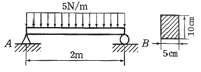
- 30 kPa
- 40 kPa
- 60 kPa
- 80 kPa
(정답률: 33%)
10. 알루미늄에 관한 일반적인 설명으로 틀린 것은?
- 은백색으로 비중이 2.7 정도이다.
- Mg 보다도 비중이 작아서 중량 경감이 요구되는 자동차 항공기 등에 많이 사용된다.
- 공기 중에 산화가 잘 되지 않아 내식성이 우수하다.
- Al에 Cu, Mg, Si 등의 금속을 첨가하거나 석출경화, 시효경화 및 풀림 등의 처리를 통하여 기계적 성질을 개선할 수 있다.
(정답률: 66%)
11. 밀폐된 용기에 넣은 정지 유체의 일부에 가해지는 압력은 유체의 모든 부분에 동일한 힘으로 전달된다는 유압장치의 기초가 되는 원리 또는 법칙은?
- 뉴튼의 제1법칙
- 보일·샤를의 법칙
- 파스칼의 원리
- 아르키메데스의 원리
(정답률: 85%)
12. 두 개의 스프링을 그림과 같이 연결하였을 때 합성스프링 상수 k를 구하는 식은?
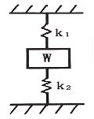
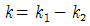
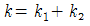
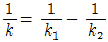
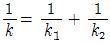
(정답률: 78%)
13. 다음 중 기어펌프에 속하지 않는 것은?
- 로브 펌프
- 트로코이드 펌프
- 스크루 펌프
- 베인 펌프
(정답률: 67%)
14. γ-Fe에 탄소가 최대 2.11% 고용된 γ고용체로 면심입방격자 결정구조를 가지고 있으며, A1 변태점 이상에서 주로 존재하는 철강의 기본조직은?
- 오스테나이트
- 페라이트
- 펄라이트
- 시멘타이트
(정답률: 60%)
15. 비례한도 내에서 인장시험을 할 때 늘어난 길이 △L 에 관한 공식으로 옳은 것은?(단, Esms 재료의 세로탄성계수, P는 인장하중, L은 시험편의 초기 길이, A는 시험편의 초기 단면적이다.)
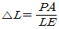
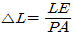
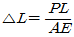
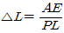
(정답률: 61%)
16. 버니어캘리퍼스의 어미자의 1눈금이 1mm이고, 아들자의 눈금은 어미자의 19mm를 20등분하였을 때 읽을 수 있는 최소 눈금은?(오류 신고가 접수된 문제입니다. 반드시 정답과 해설을 확인하시기 바랍니다.)
- 0.02 mm
- 0.20 mm
- 0.50 mm
- 0.⑤ mm
(정답률: 68%)
17. 미끄럼 베어링 재료가 구비하여야 할 성질이 아닌 것은?
- 열에 녹아 붙음이 잘 일어나지 않을 것
- 마멸이 적고, 면압 강도가 클 것
- 피로 한도가 작을 것
- 내식성이 높을 것
(정답률: 73%)
18. 2줄 나사의 피치가 0.5 mm일 때, 이 나사의 리드는?
- 1 mm
- 1.5 mm
- 0.25 mm
- 0.5 mm
(정답률: 77%)
19. 비례한도 이내에서 응력과 변형률이 정비례한다는 것은 다음 중 어느 법칙인가?
- 오일러의 법칙
- 변형률의 법칙
- 훅의 법칙
- 모어의 법칙
(정답률: 71%)
20. 다음 용접부의 검사 중 비파괴검사법에 해당하는 것은?
- 인장시험
- 피로시험
- 크리프시험
- 침투탐상시험
(정답률: 79%)
2과목: 자동차엔진
21. 피스톤 링에 대한 설명으로 틀린 것은?
- 피스톤의 냉각에 기여한다.
- 내열성 및 내마모성이 좋아야 한다.
- 높은 온도에서 탄성을 유지해야 한다.
- 실린더블록의 재질보다 경도가 높아야 한다.
(정답률: 79%)
22. LPI엔진에서 크랭킹은 가능하나 시동이 불가능하다. 다음 두 정비사의 의견 중 옳은 것은?
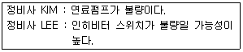
- 정비가 KIM이 옳다.
- 정비사 LEE가 옳다.
- 둘 다 옳다.
- 둘 다 틀리다.
(정답률: 75%)
23. 전자제어 가솔린 기관의 흡입공기량센서 중 흡입되는 공기흐름에 따라 발생하는 주파수를 검출하여 유량을 계측하는 방식은?
- 칼만 와류식
- 열선식
- 맵 센서식
- 열막식
(정답률: 69%)
24. 기관에 쓰이는 베어링의 크러시(Crush)에 대한 설명으로 틀린 것은?
- 크러시가 크면 조립할 때 베어링이 안쪽 면으로 변형되어 찌그러진다.
- 베어링에 공급된 오일을 베어링의 전 둘레에 순환하게 한다.
- 크러시가 작으면 온도 변화에 의하여 헐겁게 되어 베어링이 유동한다.
- 하우징보다 길게 제작된 베어링의 바깥 둘레와 하우징의 둘레의 길이 차이를 크러시라 한다.
(정답률: 57%)
25. 전자제어 디젤 기관의 인젝터 연료분사량 편차보정기능(IQA)에 대한 설명 중 거리가 가장 먼 것은?
- 인젝터의 내구성 향상에 영향을 미친다.
- 강화되는 배기가스규제 대응에 용이하다.
- 각 실린더별 분사 연료량의 편차를 줄여 엔진의 정숙성을 돕는다.
- 각 실린더별 분사 연료량을 예측함으로써 최적의 분사량 제어가 가능하게 한다.
(정답률: 63%)
26. 4행정 가솔린기관의 연료 분사 모드에서 동시 분사모드에 대한 특징을 설명한 것 중 거리가 먼 것은?
- 급가속시에만 사용된다.
- 1사이클에 2회씩 연료를 분사한다.
- 기관에 설치된 모든 분사밸브가 동시에 분사한다.
- 시동 시, 냉각수 온도가 일정 온도 이하일 때 사용된다.
(정답률: 59%)
27. 전자제어 가솔린 분사장치의 장점에 해당되지 않는 것은?
- 유해 배출가스 감소
- 엔진출력의 향상
- 간단한 구조
- 연비 향상
(정답률: 76%)
28. 전자제어 LPI 기관의 구성품이 아닌 것은?
- 베이퍼라이저
- 가스온도센서
- 연료압력센서
- 레귤레이터 유닛
(정답률: 65%)
29. 흡배기밸브의 밸브간극을 측정하여 새로운 태핏을 장착하고자 한다. 새로운 태핏의 두께를 구하는 공식으로 올바른 것은?(단, N : 새로운 태핏의 두께, T : 분리된 태핏의 두께, A : 측정된 밸브간극, K : 밸브규정간극)
- N = T + (A – K)
- N = A + (T + K)
- N = T - (A – K)
- N = A - (T × K)
(정답률: 68%)
30. 총배기량이 1800 cc인 4행정 기관의 도시평균 유효압력이 16kg/cm2, 회전수가 2000 rpm일 때 도시마력(PS)은? (단, 실린더 수는 1개이다.)
- 33
- 44
- 54
- 64
(정답률: 36%)
31. 연료의 저위발열량을 Hl(kcal/kgf), 연료소비량을 F(kgf/h), 도시출력을 Pi(PS), 연료소비시간을 t(s)라 할 때 도시 열효율 ni를 구하는 식은?
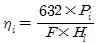
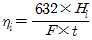
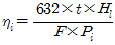
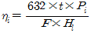
(정답률: 50%)
32. 전자제어 가솔린기관의 연료압력조절기 내의 압력이 일정압력 이상일 경우 어떻게 작동하는가?
- 흡기관의 압력을 낮추어 준다.
- 인젝터에서 연료를 추가 분사시킨다.
- 연료펌프의 토출압력을 낮추어 연료공급량을 줄인다.
- 연료를 연료탱크로 되돌려 보내 연료압력을 조정한다.
(정답률: 68%)
33. LPG기관의 봄베에는 기상 밸브, 액상 밸브, 충전 밸브의 3가지 기본 밸브가 장착된다. 이 중에서 액상 밸브의 색깔은?
- 황색
- 적색
- 녹색
- 청색
(정답률: 66%)
34. 전자제어 기관에서 열선식(hot wire type) 공기유량센서의 특징으로 맞는 것은?
- 맥동오차가 다소 크다.
- 자기청정 기능의 열선이 있다.
- 초음파 신호로 공기 부피를 감지한다.
- 대기압력을 통해 공기 질량을 검출한다.
(정답률: 67%)
35. 보기에서 가솔린엔진의 연료 분사량에 관련된 공식으로 맞는 것을 모두 고른 것은?
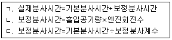
- ㄱ
- ㄴ
- ㄴ, ㄷ
- ㄱ, ㄴ, ㄷ
(정답률: 66%)
36. 행정 체적 215cm3, 실린더 체적 245cm3인 기관의 압축비는 약 얼마인가?
- 5.23
- 6.82
- 7.14
- 8.17
(정답률: 39%)
37. 엔진 분해조립 시, 볼트를 체결하는 방법 중에서 각도법(탄성역, 소성역)에 관한 설명으로 거리가 먼 것은?
- 엔진 오일의 도포 유무를 준수할 것
- 탄성역 각도법은 볼트를 재사용 할 수 있으므로 체결 토크 불량 시 재작업을 수행할 것
- 각도법 적용 시 최종 체결 토크를 확인하기 위하여 추가로 볼트를 회전시키지 말 것
- 소성역 체결법의 적용조건을 토크법으로 환산하여 적용할 것
(정답률: 51%)
38. 저위발열량이 44800kJ/kg인 연료를 시간당 20kg을 소비하는 기관의 제동출력이 90kW이면 제동열효율은 약 얼마인가?
- 28%
- 32%
- 36%
- 41%
(정답률: 45%)
39. CO, HC, NOx를 모두 줄이가 위한 목적으로 사용되는 장치는?
- 삼원 촉매장치
- 보조 흡기 밸브
- 연료증발가스 제어장치
- 블로바이가스 재순환 장치
(정답률: 87%)
40. 동일한 배기량에서 가솔린기관에 비교하여 디젤기관이 가지고 있는 장점은?
- 시동에 소요되는 동력이 작다.
- 기관의 무게가 가볍다.
- 제동열효율이 크다.
- 소음진동이 적다.
(정답률: 80%)
3과목: 자동차섀시
41. 차동 제한 차동장치 (LSD : Limited Slip Differential)의 특징으로 틀린 것은?
- 급선회 시 주행 안전성을 향상시킨다.
- 좌, 우 바퀴에 토크를 알맞게 분배하여 직진안정성이 향상된다.
- 요철 노면에서 가속, 직진 성능이 향상되어 후부 흔들림을 방지할 수 있다.
- 구동 바퀴의 미끄러짐 현상을 단속하나 타이어의 수명이 단축된다.
(정답률: 72%)
42. ABS(Anti-lock Brake System) 경고등이 점등되는 조건이 아닌 것은?
- ABS 작동 시
- ABS 이상 시
- 자기 진단 중
- 휠 스피드 센서 불량 시
(정답률: 67%)
43. 수동변속기 차량에서 주행 중 기어 변속 시 충돌음이 발생하는 원인으로 거리가 먼 것은?
- 변속기 내부 베어링 불량
- 싱크로나이저 링의 불량
- 내부기어와 허브 불량
- 클러치 유격의 과소
(정답률: 72%)
44. 오버 드라이브(Over Drive) 장치에 대한 설명으로 틀린 것은?
- 기관의 여유출력을 이용하였기 때문에 기관의 회전속도를 약 30% 정도 낮추어도 그 주행속도를 유지할 수 있다.
- 자동변속기에서도 오버 드라이브가 있어 운전자의 의지(주행속도, TPS 개도량)에 따라 그 기능을 발취하게 된다.
- 속도가 증가하기 때문에 윤활유의 소비가 많고 연료 소비가 증가한다.
- 기관의 수명이 향상되고 또한 운전이 정숙하게 되어 승차감도 향상된다.
(정답률: 75%)
45. 브레이크 드럼의 지름은 25cm, 마찰계수가 0.28인 상태에서 브레이크 슈가 76kgf의 힘으로 브레이크 드럼을 밀착하면 브레이크 토크는 약 얼마인가?
- 1.24 kgf·m
- 2.17 kgf·m
- 2.66 kgf·m
- 8.22 kgf·m
(정답률: 46%)
46. 타이어의 각부 구조 명칭을 설명한 것으로 틀린 것은?
- 트래드 : 타이어가 노면과 접촉하는 부분의 고무층을 말한다.
- 사이드 월 : 타이어의 옆 부분으로 트래드와 비드간의 고무층을 말한다.
- 카커스 : 휠의 림 부분에 접촉하는 부분으로 내부에 피아노선이 원둘레 방향으로 있다.
- 브레이커 : 트레드와 카커스의 접합부로 트레드와 카커스가 떨어지는 것을 방지하고 노면에서의 충격을 완화한다.
(정답률: 70%)
47. 드럼 브레이크와 비교한 디스크 브레이크의 특성이 아닌 것은?
- 디스크에 물이 묻어도 제동력의 회복이 빠르다.
- 부품의 평형이 좋고, 편제동 되는 경우가 거의 없다.
- 고속에서 반복적으로 사용하여도 제동력의 변화가 적다.
- 디스크가 대기 중에 노출되어 방열성은 좋으나, 제동 안정성이 떨어진다.
(정답률: 74%)
48. 전동식 전자제어 동력조향장치의 설명으로 틀린 것은?
- 속도감응형 파워 스티어링의 기능 구현이 가능하다.
- 파워스티어링 펌프의 성능 개선으로 핸들이 가벼워진다.
- 오일 누유 및 오일 교환이 필요 없는 친환경 시스템이다.
- 기관의 부하가 감소되어 연비가 향상된다.
(정답률: 59%)
49. 조향장치에 대한 설명으로 틀린 것은?
- 고속 주행시에도 조향 핸들이 안정될 것
- 조작이 용이하고 방향전환이 원활하게 이루어질 것
- 회전반경을 가능한 크게 하여 전복을 방지할 것
- 노면으로부터의 충격이나 원심력 등의 영향을 받지 않을 것
(정답률: 81%)
50. ABS(Anti-lock Brake System), TCS(Traction Control Ststem)에 대한 설명으로 틀린 것은?
- ABS는 브레이크 작동 중 조향이 가능하다.
- TCS는 주행 중 브레이크 제동 상태에서만 작동한다.
- ABS는 급제동 시 타이어 록(lock) 방지를 위해 작동한다.
- TCS는 주로 노면과의 마찰력이 적을 때 작동할 수 있다.
(정답률: 68%)
51. 동력전달장치에서 드라이브라인의 자재이음과 슬립이음의 설명으로 옳은 것은?
- 자재이음 – 각도 및 길이변화 대응
슬립이음 – 소음 및 진동 대응 - 자재이음 – 소음 및 진동 대응
슬립이음 – 각도 및 길이변화 대응 - 자재이음 – 각도변화 대응
슬립이음 – 길이변화 대응 - 자재이음 – 길이변화 대응
슬립이음 – 각도변화 대응
(정답률: 67%)
52. 자동차 동력전달계통의 이음 중 구동축과 회전축의 경사각이 30° 이상에서 동력전달이 가능한 이음은?
- 버필드 이음
- 슬립 이음
- 플렉시블 이음
- 십자형 자재이음
(정답률: 44%)
53. 댐퍼 클러치 제어와 관련 없는 것은?
- 스로틀 포지션 센서
- 펄스제너레이터-B
- 오일온도 센서
- 노크센서
(정답률: 59%)
54. 공기식 현가장치에서 벨로스형 공기 스프링 내부의 압력 변화를 완화하여 스프링 작용을 유연하게 해주는 것은?
- 언로드 밸브
- 레벨링 밸브
- 서지 탱크
- 공기 압축기
(정답률: 49%)
55. 브레이크 페달을 강하게 밟을 때 후륜이 먼저 록(lock) 되지 않도록 하기 위하여 유압이 일정압력으로 상승하면 그 이상 후륜 측에 유압이 가해지지 않도록 제한하는 장치는?
- 프로포셔닝 밸브
- 압력 체크 밸브
- 이너셔 밸브
- EGR 밸브
(정답률: 79%)
56. 전자제어 파워스티어링 제어방식이 아닌 것은?
- 유량 제어식
- 유압 반력 제어식
- 유온 반응 제어식
- 실린더 바이패스 제어식
(정답률: 63%)
57. 타이어 압력 모니터링 장치(TPMS)에 대한 설명 중 틀린 것은?
- 타이어의 내구성 향상과 안전 운행에 도움이 된다.
- 휠 밸런스를 고려하여 타이어압력센서가 장착되어 있다.
- 타이어의 압력과 온도를 감지하여 저압 시 경고등을 점등한다.
- 가혹한 노면 주행이 가능하도록 타이어 압력을 조절한다.
(정답률: 74%)
58. 평탄한 도로를 90 km/h로 달리는 승용차의 총 주행저항은 약 얼마인가? (단, 총중량 1145 kgf, 투영면적 1.6m2, 공기저항계수 0.03, 구름저항계수 0.015 이다.)
- 37.18 kgf
- 47.18 kgf
- 57.18 kgf
- 67.18 kgf
(정답률: 47%)
59. 엔진 회전수가 2000 rpm으로 주행 중인 자동차에서 수동변속기의 감속비가 0.8이고, 차동장치 구동피니언의 잇수가 6, 링기어의 잇수가 30일 때, 왼쪽 바퀴가 600 rpm으로 회전한다면 오른쪽 바퀴의 회전 속도는?
- 400 rpm
- 600 rpm
- 1000 rpm
- 2000 rpm
(정답률: 57%)
60. 전자제어 현가장치(ECS)의 감쇠력 제어를 위해 입력되는 신호가 아닌 것은?
- G센서
- 스로틀 포지션센서
- ECS 모드 선택 스위치
- ECS 모드 표시등
(정답률: 57%)
4과목: 자동차전기
61. 15000 cd의 광원으로부터 10m 떨어진 위치에서 조도(Lx)는?
- 150
- 500
- 1000
- 1500
(정답률: 64%)
62. 계기판의 유압 경고등 회로에 대한 설명으로 틀린 것은?
- 시동 후 유압스위치 접점은 ON 된다.
- 점화스위치 ON 시 유압 경고등이 점등된다.
- 시동 후 경고등이 점등되면 오일양 점검이 필요하다.
- 압력스위치는 오일 펌프로부터의 유압에 따라 ON/OFF 된다.
(정답률: 55%)
63. 도난방지장치에서 리모콘으로 록(Lock) 버튼을 눌렀을 때 문은 잠기지만 경계상태로 진입하지 못하는 현상이 발생한다면 그 원인으로 가장 거리가 먼 것은 무엇인가?
- 후드 스위치 불량
- 트렁크 스위치 불량
- 파워윈도우 스위치 불량
- 운전석 도어 스위치 불량
(정답률: 74%)
64. 2개의 코일 간의 상호 인덕턴스가 0.8H일 때 한 쪽의 코일의 전류가 0.01초간에 4A에서 1A로 동일하게 변화하면 다른 쪽 코일에는 얼마의 기전력이 유도 되는가?
- 100V
- 240V
- 300V
- 320V
(정답률: 53%)
65. 기동전동기의 전기자 코일에 항상 일정한 방향으로 전류가 흐르도록 하는 것은?
- 슬립링
- 정류자
- 변압기
- 로터
(정답률: 76%)
66. 점화장치에서 점화 1차회로의 전류를 차단하는 스위치 역할을 하는 것은?
- 점화코일
- 점화플러그
- 파워TR
- 다이오드
(정답률: 72%)
67. 증폭률을 크게 하기 위해 트랜지스터 1개의 출력 신호가 다른 트랜지스터 베이스의 입력신호로 사용되는 반도체 소자는 무엇인가?
- 다링톤 트랜지스터
- 포토 트랜지스터
- 사이리스터
- FET
(정답률: 62%)
68. 전조등 자동제어 시스템이 갖추어야 할 조건으로 틀린 것은?
- 차고 높이에 따라 전조등 높이를 제어한다.
- 어느 정도 빛이 확산하여 주위의 상태를 파악할 수 있어야 한다.
- 승차인원이나 적재 하중에 따라 전조등의 조사 방향을 좌우로 제어한다.
- 교행 할 때 맞은편에서 오는 차를 눈부시게 하여 운전의 방해가 되어서는 안 된다.
(정답률: 79%)
69. 이모빌라이저 시스템에 대한 설명으로 틀린 것은?
- 자동차의 도난을 방지할 수 있다.
- 키 등록(이모빌라이저 등록)을 해야만 시동을 걸 수 있다.
- 차량에 등록된 인증키가 아니어도 점화 및 연료 공급은 된다.
- 차량에 입력된 암호와 트랜스폰더에 입력된 암호가 일치해야 한다.
(정답률: 83%)
70. 다음 회로에서 2개의 저항을 통과하여 흐르는 전류는 A, B, C 각 점에서 어떻게 나타나는가?
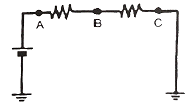
- A, B, C점의 전류는 모두 같다.
- B에서 가장 전류가 크고 A, C는 같다.
- A에서 가장 전류가 작고 B, C는 갈수록 전류가 커진다.
- A에서 가장 전류가 크고 B, C는 갈수록 전류가 작아진다.
(정답률: 71%)
71. 병렬형(Parallel) TMED(Transmission Mounted Electric Device)방식의 하이브리드 자동차의 HSG(Hybrid Starter Generator)에 대한 설명 중 틀린 것은?
- 엔진 시동 기능과 발전 기능을 수행한다.
- 감속 시 발생되는 운동에너지를 전기에너지로 전환하여 배터리를 충전한다.
- EV 모드에서 HEV(Hybrid Electric Vehicle)모드로 전환 시 엔진을 시동한다.
- 소프트 랜딩(Soft Landing)제어로 시동 ON 시 엔진 진동을 최소화하기 위해 엔진 회전수를 제어한다.
(정답률: 57%)
72. 운행 자동차의 전조등 시험기 측정 시 광도 및 광축을 확인하는 방법으로 틀린 것은?
- 타이어 공기압을 표준공기압으로 한다.
- 광축 측정 시 엔진 공회전 상태로 한다.
- 적차 상태로 서서히 진입하면서 측정한다.
- 4등식 전조등의 경우 측정하지 않는 등화는 발산하는 빛을 차단한 상태로 한다.
(정답률: 81%)
73. 에어백 시스템의 부품 중 고장 시 경고등이 점등되지 않는 것은?
- 에어백 모듈
- 충돌 감지 센서
- 클록 스프링
- 디퓨져 스크린
(정답률: 65%)
74. 배터리 용량 시험 시 주의 사항으로 가장 거리가 먼 것은?
- 기름 묻은 손으로 테스터 조작은 피한다.
- 시험은 약 10~15초 이내에 하도록 한다.
- 전해액이 옷이나 피부에 묻지 않도록 한다.
- 부하 전류는 축전지 용량의 5배 이상으로 조정하지 않는다.
(정답률: 75%)
75. 전조등 검사 시 좌측 전조등 주광축의 좌·우측 진폭은?
- 좌 30cm 이내, 우 30cm 이내
- 좌 15cm 이내, 우 15cm 이내
- 좌 15cm 이내, 우 30cm 이내
- 좌 30cm 이내, 우 15cm 이내
(정답률: 76%)
76. 에어컨시스템에서 저압측 냉매 압력이 규정보다 낮은 경우의 원인으로 가장 적절한 것은?
- 팽창 밸브가 막힘
- 콘덴서 냉각이 약함
- 냉매량이 너무 많음
- 에어컨 시스템 내에 공기 혼입
(정답률: 55%)
77. 점화플러그 종류 중 저항 플러그의 가장 큰 특징은?
- 불꽃이 강하다.
- 고속 엔진에 적합하다.
- 라디오의 잡음을 방지한다.
- 플러그의 열 방출이 우수하다.
(정답률: 70%)
78. 자동차의 검사에서 전기장치의 검사 기준 및 방법에 해당되지 않는 것은?
- 전기배선의 손상여부를 확인한다.
- 배터리의 설치상태를 확인한다.
- 배터리의 접속·절연상태를 확인한다.
- 전기선의 허용 전류량을 측정한다.
(정답률: 73%)
79. 12V 50AH의 배터리에서 100A의 전류로 방전하여 비중 1.220으로 저하될 때까지의 소요시간은?
- 5분
- 10분
- 20분
- 30분
(정답률: 55%)
80. 전자력에 대한 설명으로 틀린 것은?
- 전자력은 자계의 세기에 비례한다.
- 전자력은 도체의 길이, 전류의 크기에 비례한다.
- 전자력은 자계방향과 전류의 방향이 평행일 때 가장 크다.
- 전류가 흐르는 도체 주위에 자극을 놓았을 때 발생하는 힘이다.
(정답률: 59%)
극단면계수는 단면의 형태와 재료의 물성에 따라 달라지는 상수이다. 따라서 최대전단응력은 극단면계수와는 관련이 없다. 비틀림 모멘트가 증가하면 최대전단응력도 증가하며, 극관성 모멘트가 증가하면 최대전단응력은 감소한다. 또한, 축 지름의 3제곱이 증가하면 단면의 강성이 증가하므로 최대전단응력은 감소한다.